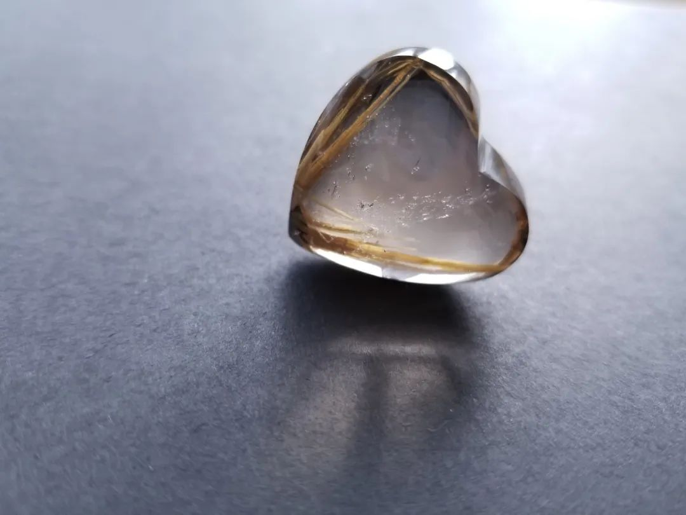
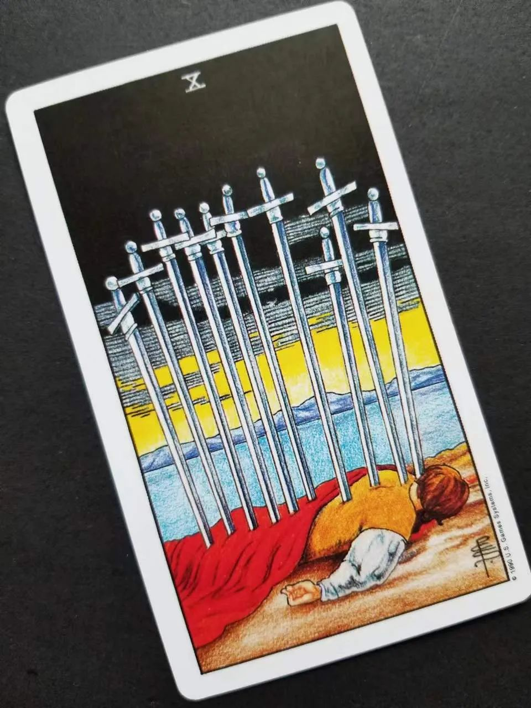
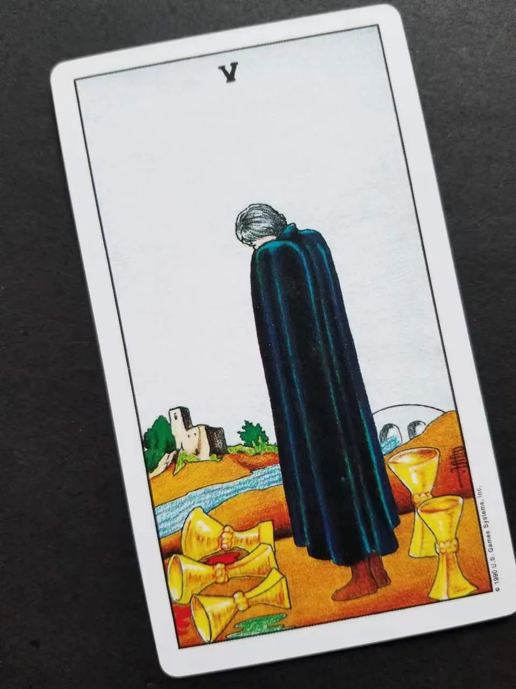
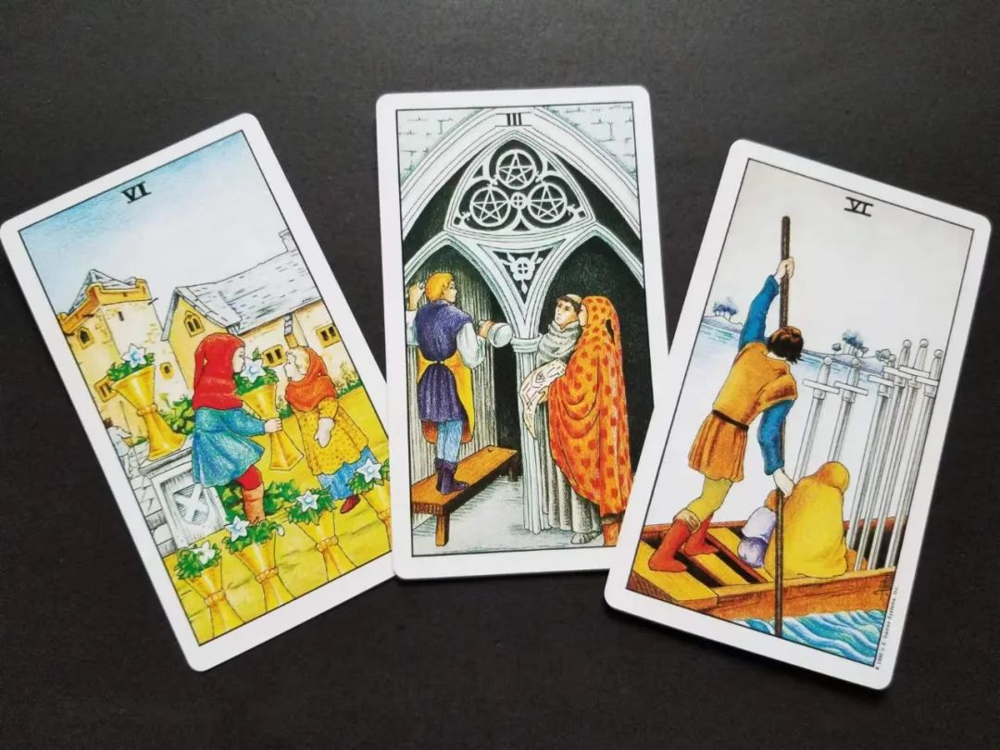
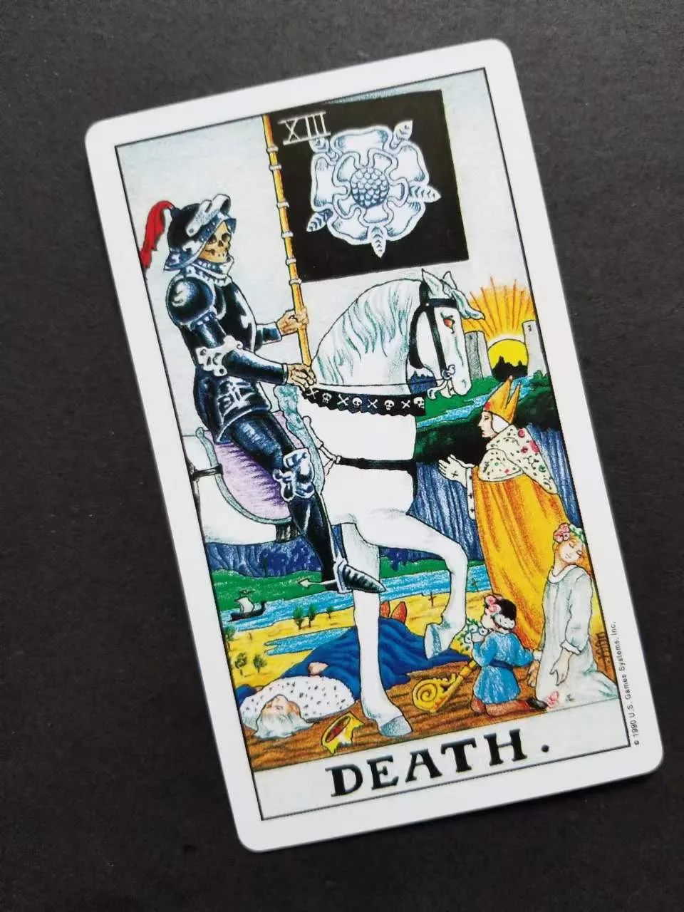
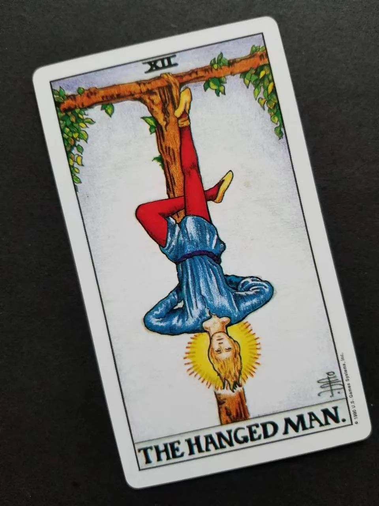
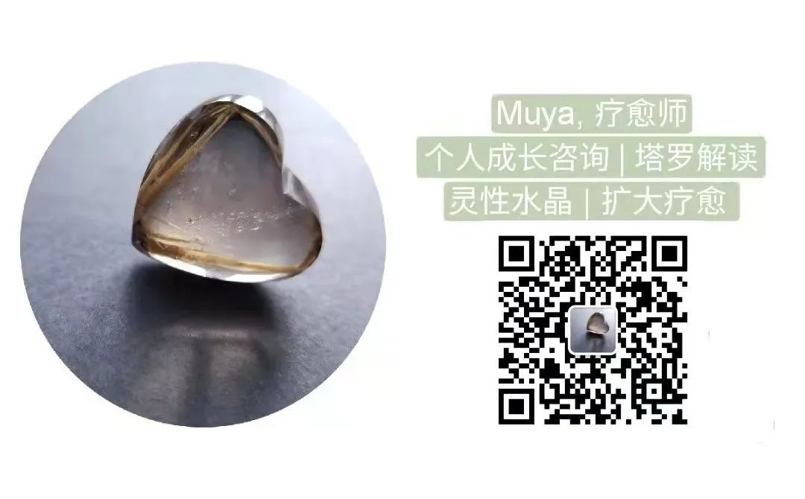

疗愈 | 纪念一位往生光明的老人
木雅Muya 南园晶舍[南园晶舍](http://weixin.qq.com/r/Cz8XEwzEgMT8KUhwb2qP)
| 微信号 | gh_512c07fa4640 |
| 功能介绍 | 为大地母亲祈祷 |
2022-05-22 16:12
原文链接(长) 原文链接(短)

记录一段持续了一年之久的疗愈，纪念一位已去世的老人。
去年初，一位朋友H女士请我为她的父亲做远程疗愈，当时她父亲已动过一次大手术，在康复中，但预后不太好，人也只能卧床静休，不能说话。我为老先生做疗愈，从年初开始，一直到他十月份去世，在那之后，我又在疗愈中感受到他灵魂的光明，虽然从未见面，却是一段难得的缘分。翻开我与这位朋友一年多来的对话记录，很多值得记下的灵性时刻。
最初的印象是，当老先生卧床不起、她请我联结看看老先生的状态时，我看到了一片非常静谧、深沉的湖泊，这是老先生灵魂所在，又或许是他的来处。在这片湖水中，我感受到他的宁静。这并不寻常，是古老的、有历练的灵魂才会如此。于是H女士告诉我，父亲自生病以来，一直都表现得很平静，对病痛也平静耐受着。听完这样的话，我对那片湖水产生敬意。他就像一位古老的湖神静静矗立着。在那之后，我抽了一张牌代表他，抽到了圣杯国王，水中的王者。
接下来，在大半年的疗愈中，每次我都为老先生抽一张牌，来看看他的生命状态如何。在那时，医生已表示老先生处于生命末期，只是他顽强的生命之火隐隐不熄，像是对家人恋恋不舍，在ICU中几次好转反复。H女士希望他能减少痛苦，也希望能带给他多一些陪伴安慰。这些凝聚了生命最后关注的牌，令我非常震撼。
在十多次的抽牌中，有整整五次，我抽到同一张牌，且都是逆位。这张牌是宝剑十。一个身上插满宝剑的人躺在岸边，在暗夜中等待黎明。这张牌的寓意往往指向最沉重、最谷底的时刻，但最黑的暗夜即将过去，黎明将至。每一次抽到的都是逆位，这寓示着一种生命的挣扎，不能沉入谷底而痛苦地拖延。想到老先生在ICU中插管，经受着身体的疼痛，宝剑十这张牌真的非常形象。

其中有两次，我抽到圣杯五，且都是正位。这是一张表示丧失、哀伤、失落的牌。是一种悲伤的心情。H女士说，父亲最放不下的就是他爱的家人，他非常关心家人。

当中有一次，她请我为父亲抽三张牌，分别代表父亲心中对兄弟、妻子、女儿说的话。我抽到了圣杯六代表兄弟之情。这张牌可以说是一段童年时被照料呵护的友爱之情，是一种怀念与温馨。抽到星币三代表对妻子的感情，像是在表示对共同协力建设家庭的感恩。最后抽到宝剑六代表给女儿的话，尤其令我感怀。这张牌仿佛在诉说，别太伤心，让我走吧，一切都会过去的。画面中有悲伤也有疗愈。

其中有两次，问老先生的意愿是什么，抽到的都是死神。我难以形容这震撼。

在老先生临终前，我最后两次抽牌，H女士想问父亲还有什么要对她说的，两次抽到的都是吊人。这张牌是一种平静随顺的牺牲，我想老先生是想告诉女儿，放下吧，没事的，辛苦你了。

不多久老先生就去世了，过程宁静安详。
在那之后，我和H女士仍有联系，只是我疗愈的对象变成了她和女儿。因为整个家庭对老先生的离开都有难以释怀的悲伤之情，所以时不时地做一下疗愈。这样度过了半年的时间后，在最近的一次疗愈中，我意外地看到了老先生的“存在”。
当时我在聚焦为H疗愈个人议题（父亲去世的创伤），在我闭着眼睛时，忽然感受到一股非常明亮的白光，很快我意识到那就是老先生，他慢慢在我脑海中凝聚出形象，非常明显，整个人看上去很亮，穿着有点像西方圣殿里的白色长袍，周身都散发着柔和的白光。我感受到他的灵魂已经不在这个业力场中了，他在一个较为高频和自由的地方，脱离了这个世间的痛苦。此时他示意我，他不会再轮回人间了，下一步，可能会在其他行星的场域中继续进化，但也是以比较高阶的形式，不会有那么多沉重。
这个光的形象在我疗愈时一直在，我试图问他一些具体的信息，比如有什么话要留给女儿。意外地，他只说了一句话，“不要太软弱了”，不是责备的口气，只是温柔的勉励，大概意思是不要太沉溺在悲观情绪里。然后我问，有什么要带给小孙女的话，他则淡淡地表示一切都有自己的命运轨迹，他已经不在尘寰，没什么可操心的，也无需多话。然后他安静地看我为H疗愈，直到最后结束才离开。我感受到他的平和明亮。
结束后，我有点犹豫要不要告诉H女士那句话，“不要太软弱了”，是什么意思呢，我并不确定他的含义，最后还是将原话告诉了她。然后她告诉我：“确实最近时常想起父亲，或者说没有一天不想念。曾很深地感受到了窒息，似乎人间不适合我再存在了，想父亲带我一起离开。悲伤，很悲伤。但另一面，孩子的存在和自己热爱的事情似乎还是鲜活的，可以再次生长推动着我生长。紧紧地深深地被两股力量拉扯，身心疲惫。”我明白了那句话背后深沉的慈爱……和劝勉。从灵魂的关系来说，他已经不再是父亲了，但这份爱会是永恒的。
想起很多年前，我刚刚开始接触灵性世界，找了一位灵媒老师做个案，她联结我的指导灵后传了大约一个小时的信息，都是比较平实的话语，类似一种心灵教导，这些记录我还保存着。最后结束时，她突然说：指导灵有几句特别的话要告诉你，他说他是你某一世的父亲，他对你有很深的父亲般的爱，我看到以前他培养过你很多对艺术和美的创造，他还有一些信息给你——
虽然我无法再以人类的形式保护和照顾你，但是请相信我们一起度过的日子永远存在，并且这份紧密的感情连接一直滋养着我们彼此。虽然你今生选择的功课与之前单纯的生活相比艰苦异常，但是你已经长大到能够去处理这样的人生
，并且我从未怀疑你会因为这样的经历而封闭在痛苦中。痛苦只是绽放的养分
，我相信你会将这肥沃的养分绽放出属于自己的生命之花。请接收我们所有来自灵界的祝福，我爱你。
在她说的当下，我立刻感受到了很深的爱意。那是我最初的灵性体验之一，非常难忘。爱是不会终止的，关系在身体死亡后，以更高形式延续。也把这段话送给H。
祝愿世间所有的老人最后都能在平静祥和中离开，并化为明亮神灵护佑着孩子们。
